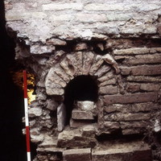
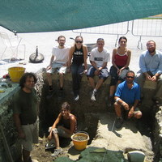
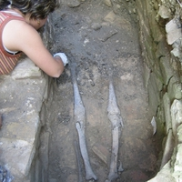

Il sito
La valle del Cesano
La chiesa
La contrada
Scavi e restauri
Pubblicazioni
Il museo
Foto
Contatti
News
Monasteri della valle del Cesano
leggi tutto....
Campagna di scavi 2001

leggi tutto....
Campagna di scavi 2002
leggi tutto....
Campagna di scavi 2003
leggi tutto....
Campagna di scavi 2004
leggi tutto....
Campagna di scavi 2005
leggi tutto....
Inaugurazione dell'Antiquarium di Santa Maria in Portuno
leggi tutto....
Campagna di scavi 2006

leggi tutto....
Campagna di scavi 2007
leggi tutto....
Campagna di scavi 2008

leggi tutto....
Campagna di scavi 2009
leggi tutto....
Campagna di scavi 2010
leggi tutto....
Campagna di scavi 2011
leggi tutto....
Mostra: Scrivere in tutti i sensi
leggi tutto....
Presentazione volume Archeologia nella valle del Cesano da Suasa a Santa Maria in Portuno
leggi tutto....